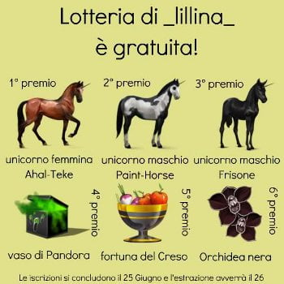

-
I am looking at ways to get the head lamp configuration that the rest of the world's 84-86 Z31's have without having to get genuine assemblies from over-seas.
While midian has told me his LHD Euro Z31 before the yellow kit-car actually had a Jetta head lamp, and while I wait for additional information regarding those lamps, I want to give the Zenki lamps, themselves, a shot.
I would appreciate it if someone could submit pictures of the back of 87-89 Head Lamps (and define what is top or bottom).
Thanks,
Byron
-
Correction: only Jetta headlamp LENS was used on the car. Swapping Jetta headlamps looks to be a clean-slate project. -
I have dibs on those headlamps, get your own :nanan?re1984 Hardtop Z31NA2T: Angrily decomposing due to lack of motivation
1986 Z31NA: Dead and gone -
why would you swap out to a jetta lens?My Build Thread -
I have one kouki lamp I would be willing to sell you to further this cause.sigpic -
I meant a Jetta lamp would be new territory for a swap. Idk if anything will line upP.1.M.P. wrote: I have dibs on those headlamps, get your own :nanan?re -
First off not the rest of the world has those euro headlights. So if I understand it you are trying to use 87-89 headlight in the 84-86 housing is that right? The headlight for zenki is narrower due to the driving lamps next to them but the entire housing is actually wider so kouki headlights would be too narrow to fit and fill out the full housing. The easiest option would be to measure the desired height and width of the lamp you need pick up a generic lamp that fits the size, cut the bar between headlamp and driving lamp then you may need a braket or adaptor to mount and aim everything but may not even need that. I have both zenki and kouki headlight assemblies between my 89 and my 85 if that would help but if I am understanding what you are trying to do kouki lights won't help. -
I've somewhat looked into this. I even bought a spare set of kouki headlight assemblies.
Side by side the kouki and zenki headlamp mechanisms are similar, but have different pivot locations and widths.
I thought i could cut out the kouki headlamp bulb support metal and weld it into a zenki assembly.
It would be a challenge to get the alignment right so the kouki bulb sits at the same depth as the zenki.
After staring at them side by side for awhile, i decided it was too big of a project for me to tackle right now.
Also, I think the kouki bulb would need some sort of black trim ring around it to fill in the gap between the larger square
headlight cutouts of the zenki nose piece. I can see if i can take some photos tonight and post them.
84 AE/Shiro #683/Shiro #820/84 Turbo -
HELLA universal square lights could work too… -


Good luck :-)
84 AE/Shiro #683/Shiro #820/84 Turbo -
Thank you, Z-Karma. -
I'm back on this again >
-
Ok.
So to pick up--Richard_85ZXT makes a good point about Kouki headlamps being smaller than the entire Zenki headlight housing, which is why I sense the use of metal strips in the Force. These metal strips can be made to shape to match both the contour of the Zenki housing, and then riveted to create new, more convenient mounting surfaces for the Kouki lamp.
As for searching for headlamps for other cars…ain't nobody got time for that :P and I would like to use as much of the Kouki headlight bucket as possible, since its shape and the Kouki lamp's mounting points are related.
This is why I have come up with the following drawings.
There are two options:
1. Move only the mounting/adjustment screws to a modified Zenki housing (metal between fog light and driving light cut to fit the Kouki lamp; some bumps/ridges may also be hammered to a different shape). this may require those thin-gauge metal tabs/strips for some of the adjusting screws (you can tell because some of the holes that I eye-balled are not in comfortable places for a screw or rivet to be in :/
KZ Headlight Conversion Moving Mounting Points.jpg
2. Cut out as much of the Kouki's headlight support as possible, line it up with the Zenki headlight support, finding common/similar surfaces (or make them similar :P), then drill holes for rivets and rivet the modified Zenki headlamp support to the modified Kouki headlamp support.
K2 Headlight Conversion Riveting Housing.jpg
Definitely a challenge will be the raised areas that both Kouki and Zenki headlamps have on the same region on each of their headlamp supports. Nothing that a hammer, cutting wheel, and metal sheers won't fix :P
K2 Headlight Conversion Riveting Housing 2.JPG
So now I gotta get back to finding a Kouki bucket as I already have a spare Zenki bucket.

Copyright © 2006–. All rights reserved. Privacy Policy